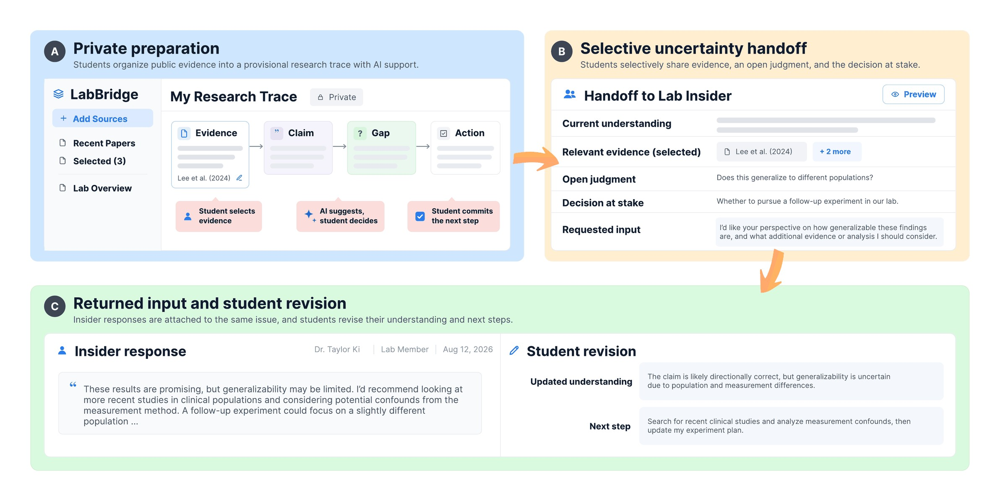
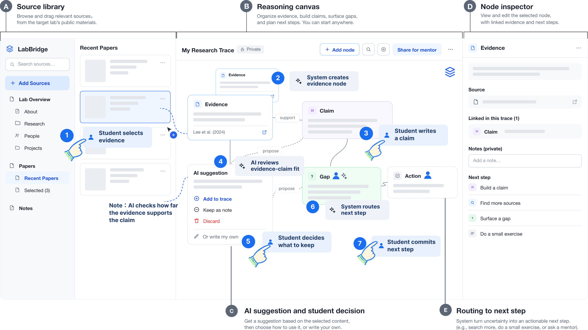
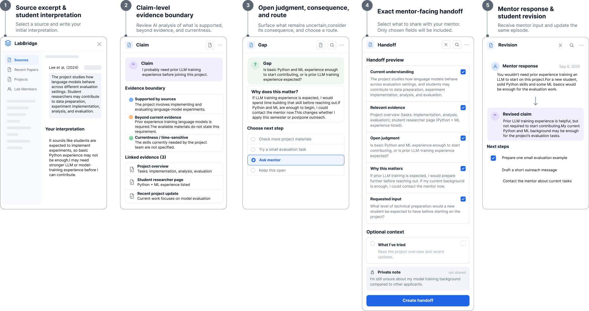
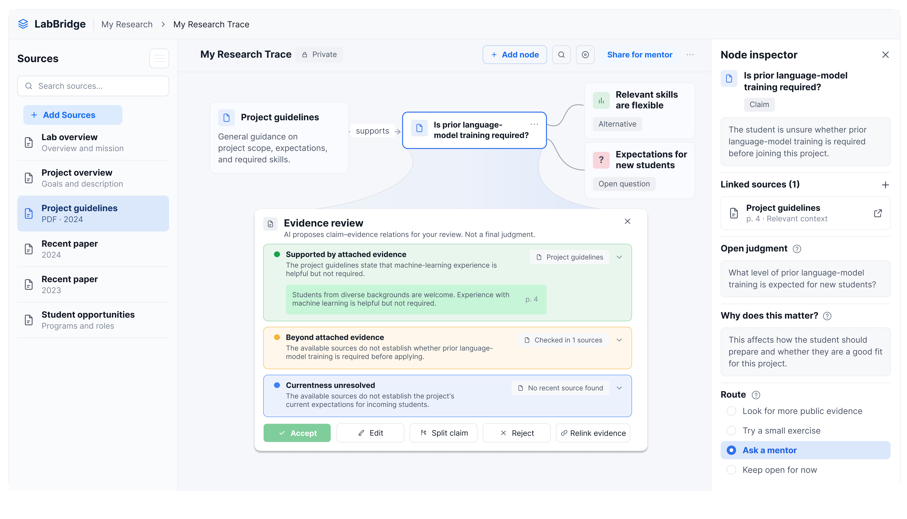
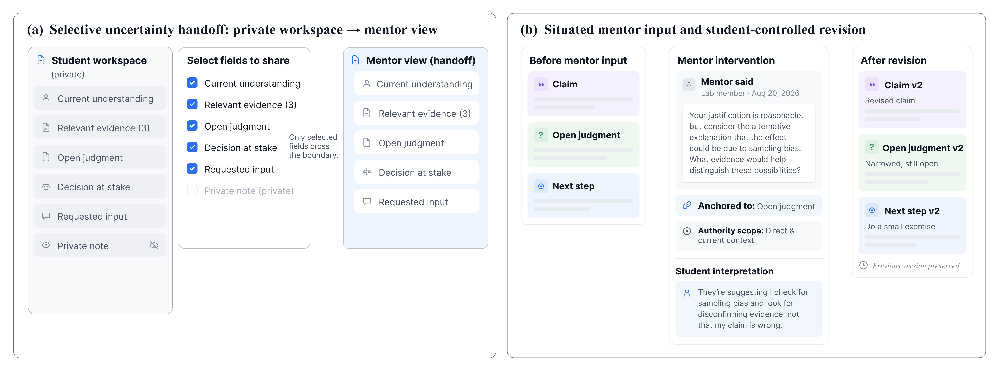
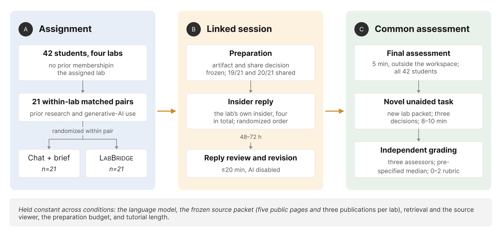
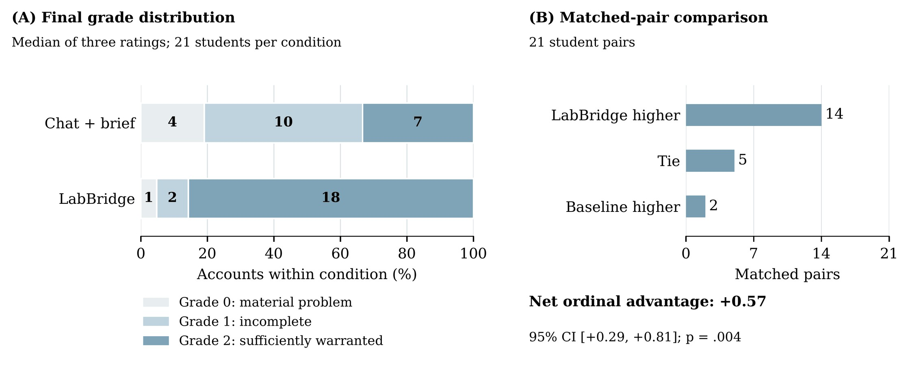

An evidence boundary
The judgment depends on contextual knowledge that the available public materials cannot establish.
LabBridge is an AI-assisted workspace that helps a student carry an unresolved question into a first conversation with a research lab, instead of treating it as something to settle alone first.
A student reads that a lab used a method in a 2025 paper and concludes they must learn it before writing. Nothing public says whether newcomers are expected to know it. Only someone inside the lab can say. So the student prepares instead of asking, and the question that would have ended the preparation is the one they never send.
We call this circular obligation a readiness trap. LabBridge is an AI-assisted workspace built around a different move: instead of resolving the student's uncertainty, it helps them make the uncertainty discussable, packaged with its evidence, its stakes and a specific request, before they can settle it alone.
01 / Background
A student preparing to approach a research lab reads a method in one of its papers and takes it as something to master before joining. The public record establishes that the lab used the method. It rarely establishes whether that expertise is expected of a newcomer, and answering that question can require someone inside the lab.
Whether this method is a prerequisite or something you learn on arrival is not in the paper. Only the lab can settle it.
For an undergraduate entering research, the prospect of appearing unprepared shapes when and how they seek input at all.
Contact waits until the student feels ready. Nothing in the reading can say when that point has been reached.
Readiness is judged against an expectation only the lab can state, so preparing to ask replaces asking. We call this circular obligation the readiness trap.
AI is already part of how students approach unfamiliar work: it explains a method, relates it to what they know and helps draft the question. But preparing a research inquiry involves more than understanding what a source says. A paper can establish that a method was used without establishing that newcomers must already know it.
When the perceived prerequisite disappears into a general expression of interest, an insider answers the visible question and the reason for delaying contact goes unaddressed. The premise that was actually blocking the student never reaches the person who could resolve it.
How can AI help students carry consequential open judgments from private preparation into mentor consultation and subsequent decision making?
02 / Research
Formative work with 10 students and six lab insiders, followed by a representation-synthesis activity with three more of each. Sessions combined critical-incident reconstruction with co-design, yielding 18 judgment episodes.
Eight of the 10 students described preparation obligations: learning methods before knowing whether they were required, reading with no stopping rule, delaying contact, or replacing a specific confusion with a general expression of interest.
Volume of preparation alone was not enough to call something a trap. An episode counted only when all three conditions below held together. Nine of the 18 episodes, from seven students, met all three.
The judgment depends on contextual knowledge that the available public materials cannot establish.
The student treats settling that judgment independently as a condition for seeking the input it requires.
That requirement produces unbounded preparation, delayed contact, or suppression of the question.
I think I should finish reading their two most recent articles before contacting them1, otherwise the questions I’ll ask will be too basic2. I even deleted the question I originally wanted to ask3, because it would seem like I hadn’t done any analysis. Student participant, formative study
Finishing the reading is set as the condition for making contact, before anyone has said it is required.
What counts as too basic is set by the lab. Nothing in the two articles can tell the student where that line sits.
The one thing an insider could have resolved is removed from the message, to protect against looking unprepared.
Two paths
Both students hit a gap they judged they had to close before making contact. What separated them was not how much they prepared. It was whether the preparation had an end, and whether the question was still there when it did.
Unbounded The question does not survive
Something in the lab’s work does not add up, and only someone inside it can say why.
An online course on mixed-effects models is treated as “what I had to finish before I could email them.”
Contact is postponed three weeks while the course is worked through.
The message that finally goes out asks only whether the lab is “taking new students.”
The one thing an insider could have resolved is never asked.
Bounded The question arrives intact
A toolkit’s prerequisites look like something that has to be settled first.
The same judgment is made: learn this before making contact.
Two evenings, decided in advance, and then the email goes out either way.
The prerequisite question is still in the message that gets sent.
Bounded preparation with the question preserved means no trap.
The target is not less preparation. It is recognising when preparation has hit an evidence boundary, which is the point where reading stops paying and only a person can answer.
A question’s visible topic often leaves the consequential premise implicit. The student asks about the method; the thing actually blocking them is the assumption underneath it.
Insiders answered what was asked. The reason for the delay went unaddressed, because nobody had put it in the message.
03 / The design construct
Comparing what students would share with what insiders said they needed produced five recurring information functions. A handoff links the student’s current understanding and the evidence behind it to the open judgment, the decision it would change, and the specific input requested. Fields can be combined or omitted; the student controls every disclosure.
The decision consequence is the part that does the work. “Is prior LLM-training experience expected?” is a question. “If it is, I postpone outreach and prepare further; if it isn’t, I contact you now” is a question an insider can answer usefully.

The workflow in three moves: private preparation with AI support, a selective handoff across the boundary to a lab insider, and returned input attached to the same judgment for the student to revise.
04 / System
A web application on GPT-4.1 with an append-only episode store that keeps AI proposals, student commitments, handoff projections, insider interventions and student revisions separable.

(A) source library, (B) reasoning canvas, (C) AI suggestion and student decision, (D) node inspector, (E) next-step routing.
The system will not generate the lab-level claim the student is then asked to endorse. Generative interpretation waits until the student has stated a position of their own.
The AI decomposes an interpretation into claims and marks what the attached sources establish, what goes beyond them, and whether currentness is settled. Missing evidence surfaces as insufficient rather than becoming a stronger conclusion.
Sources, rejected proposals, prior versions and route changes stay with the student. Nothing enters a handoff because the system generated or stored it.
It may polish a revision the student has already drafted. It cannot mark an insider-dependent episode resolved.
Walkthrough
A student reads a project description as requiring prior LLM-training experience. The system marks the project’s use of LLM evaluation as supported and the prerequisite inference as beyond the evidence. She turns the unsupported part into an explicit judgment, routes it to the mentor, and keeps private her note about possibly over-reading the phrase “LLM familiarity.”
The mentor replies that solid Python and ML basics are enough. The reply attaches to the same judgment; her earlier interpretation stays in the episode history beside it.


Evidence-bounded judgment construction. Every proposed relation links to source spans and dates; the student can accept, edit, split, reject or relink it before it enters the committed episode.

(a) Only student-selected fields cross the boundary to the insider. (b) Returned context stays attached to the element it addresses, and the revision fields start blank, so the student decides what changes.
Good AI support does not always remove uncertainty. Sometimes it makes uncertainty precise enough to hand to someone else.
05 / Controlled study
42 students across four labs, matched within lab on prior research experience and generative-AI use, one randomly assigned to each condition. The baseline was source-grounded chat with an editable brief. Both conditions shared the same model, source packet, retrieval, viewer, citation support and share preview.

One focal issue is carried from preparation through an insider reply to a common final assessment. Students who withheld an artifact stayed in that assessment. Three independent assessors, rubric and median-of-three aggregation fixed before scoring.

Fourteen pairs favour LabBridge, five tie, two favour the baseline. All three assessors independently favour LabBridge; pairwise weighted κ runs .74 to .83.
Decomposing the rubric located the difference precisely. Epistemic warrant was the same in both conditions, at 19/21 either way. The gap was in issue preservation (21/21 against 17/21) and action adequacy (19/21 against 10/21). LabBridge students were not reasoning more soundly about evidence; they were keeping hold of the consequential question and saying what they would do about it.
The unaided task is the result I find hardest to explain away: three clarification decisions on an unfamiliar lab packet, no AI, no access to their earlier work. The advantage held at +23.8 percentage points.
06 / Field deployment
Students were considering first contact. Nobody guaranteed a reply, nobody scheduled a meeting, and the window closed on day 14 for every case, including the ones where contact never happened.
One student began convinced that interview training had to precede contact, and on day 3 sent a question about whether script piloting actually required it: “I still wasn’t sure I was ready, but I could ask whether that preparation was actually needed. That was the message I sent.” The insider’s account of the same exchange: “I could see that they were treating the method as an entry requirement, so I answered that first instead of giving them another reading list.”
A second pattern mattered more to me than the success cases. One student took a suggested pilot task as evidence that a role was available; the reply separated the task from a placement decision, and she sent a separate inquiry rather than assuming: “The reply told me I could try the pilot task. It didn’t tell me there was a place in the lab, so I asked about that separately.” The authority limit in the reply changed her next message, instead of sitting in a note as a caveat.
Limits
LabBridge preparation took 3.28 minutes longer on average. The workflow buys account quality with preparation cost, and that trade is not free.
Of 76 displayed AI proposals, students initially accepted five that disagreed with researcher annotations, including all four overstatements. Three were caught before sharing, one after insider input, and one persisted into a grade-0 final account.
Every keyed action on the unaided task involves clarifying or confirming. It does not test the opposite judgment, which is knowing when the evidence is already sufficient and you should just proceed.
One student kept a funding constraint private and went to the paid-research office instead; another kept returning to background reading and never sent the question. The second is exactly the trap the system was built for, and the system did not spring it.
Grades measure the submitted account, not internal reasoning, and not when a premise was corrected. The 18 field and study trajectories share participants and are not independent observations.